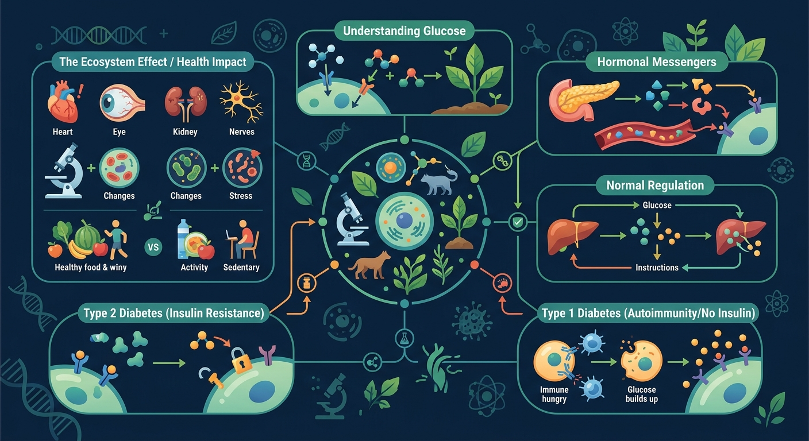
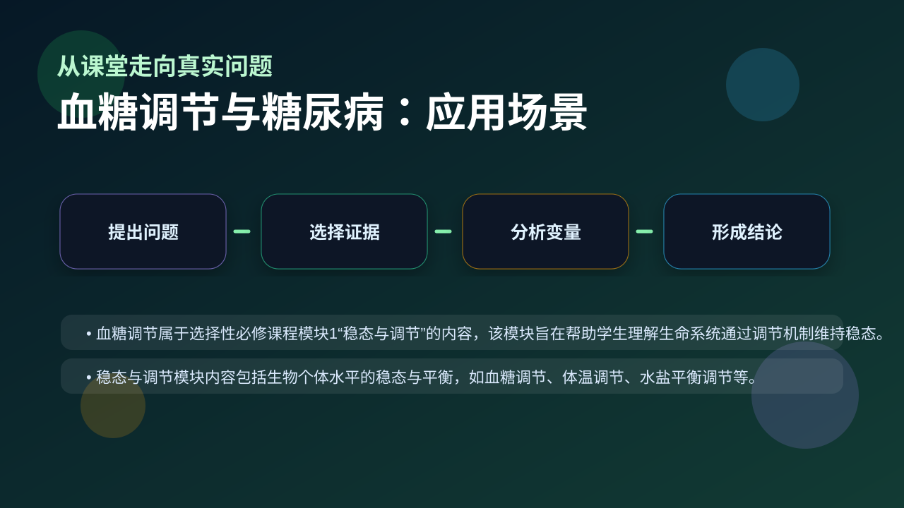

Gallery v1.0.0 · skill v7.14
机体怎样通过反馈调节维持内环境稳定？

已经知道：此前已学习消化系统中葡萄糖吸收、循环系统运输营养物质、泌尿系统排出多余物质（如尿糖）的基本过程，理解血糖是人体重要能源物质。
但问题是：难以理解胰岛素与胰高血糖素如何通过负反馈精确调节血糖（如餐后胰岛素分泌高峰的延迟现象），常混淆肝糖原合成与肌糖原分解的差异，对Ⅱ型糖尿病胰岛素抵抗机制存在认知偏差。
所以学：当体检报告显示空腹血糖6.8mmol/L时，需要分析这是否属于糖尿病前期，判断是否需要做糖耐量实验，并解释为何部分糖尿病患者尿糖检测呈阳性但胰岛素水平正常。
先选一个卡点。后面的例子、互动和 AI 学伴都会围绕它给你最小提示。
选择或输入后，本课会围绕你的问题展开。
下列哪种物质是细胞直接利用的能源？
现象入口：进食后血糖上升，随后逐渐回落；糖尿病患者血糖调节曲线异常。
机制解释：胰岛素降低血糖，胰高血糖素升高血糖，二者通过负反馈维持血糖稳态。
证据抓手：证据来自饭后血糖曲线、胰岛素浓度变化、尿糖检测和糖耐量实验。
变量线索：进食量、胰岛素分泌、胰高血糖素、肝糖原合成分解和细胞摄糖能力。做题时先找变量，再判断机制，最后写证据。
观察血糖波动曲线，识别胰岛素与胰高血糖素的拮抗作用
分解胰岛素作用：促进葡萄糖摄取、糖原合成、抑制糖异生
阐明1型糖尿病因胰岛B细胞破坏导致胰岛素绝对缺乏
应用激素调节原理分析糖尿病患者餐后血糖管理策略
情境：1型糖尿病常与胰岛素分泌不足相关，2型糖尿病常与胰岛素抵抗相关。
作答路径：现象：2型糖尿病患者空腹血糖9.8mmol/L→机制：胰岛素受体敏感性下降导致葡萄糖摄取障碍→证据：糖耐量试验显示胰岛素分泌高峰延迟且血糖回落缓慢
评分提醒：典型失分：混淆激素作用方向（如答胰高血糖素降糖），未区分糖尿病分型核心差异，忽略胰岛素是唯一降糖激素
旋转 3D 分子模型，观察结构层级。请把结构特点和 血糖调节与糖尿病 中的功能解释对应起来：结构不是装饰，而是功能的证据。
💡 操作提示：拖拽旋转模型，思考“形状、空间位置、结合位点”如何影响生命活动。
进餐后血糖升高，胰岛素分泌增加，促进组织摄取利用葡萄糖，血糖在 1-2 小时内回落到 3.9-6.1 mmol/L。
💡 探究任务：调进食糖量和胰岛素敏感性（模拟糖尿病），看血糖峰值和恢复时间，解释糖尿病患者餐后高血糖的原因。
把血糖调节只归因于“少吃糖”，忽略激素和靶细胞响应。
只说“增加/减少”不够，要写清改变的是 进食量、胰岛素分泌、胰高血糖素、肝糖原合成分解和细胞摄糖能力 中的哪一个。
没有实验现象、曲线趋势或结构证据，答案就像猜测。
关于升血糖激素的正确叙述是？
视频用语音和动态画面回顾本课主线：问题情境 → 机制模型 → 证据判断 → 迁移应用。

解释糖尿病症状、运动降糖和饮食控制，都要回到激素反馈。
提交后会检查你的解释是否包含现象、机制和变量。
如果学生只说出概念名称，继续追问：题干里哪个证据最关键？这个证据对应分子、细胞、个体还是生态系统层级？如果改变 进食量、胰岛素分泌、胰高血糖素、肝糖原合成分解和细胞摄糖能力 中的一个条件，结果会怎样？这三问能把答案从背诵推进到科学解释。
列举三种胰岛素降血糖的具体途径
分析马拉松运动员血糖稳定时两种激素的分泌变化
为胰岛素抵抗患者设计包含饮食、运动、药物的综合干预方案
2型糖尿病患者出现高血糖的主要机制是？
学习小结：血糖稳态依赖胰岛素（降糖）与胰高血糖素（升糖）的拮抗调节，糖尿病分型需区分胰岛素分泌不足（1型）或作用障碍（2型）
先独立作答，再点选项查看对错与错因。
当人体血糖浓度突然升高时，首先发生的生理变化是
下列哪种情况会导致尿糖检测呈阳性？
Ⅱ型糖尿病患者出现胰岛素抵抗的主要原因是
当血糖降低时，____细胞分泌的胰高血糖素会促进____分解为葡萄糖。
答案：胰岛A,肝糖原
胰高血糖素由胰岛A细胞分泌，主要作用于肝脏
正常人体进食后血糖上升的调节属于____调节，其中枢位于____。
答案：神经-体液,下丘脑
血糖调节是神经调节和体液调节共同作用的结果
设计实验验证胰岛素和胰高血糖素对血糖的调节作用
❓ 为什么我饿的时候会手抖？
❓ 糖尿病是吃糖太多导致的吗？
❓ 胰岛素和胰高血糖素到底怎么打架的？
学完这一课，这些问题你都能自信地回答。
✅ 诊断标准是空腹血糖≥7.0mmol/L或餐后2小时≥11.1mmol/L
💡 混淆现象与诊断指标
✅ 1型糖尿病必须注射胰岛素，2型晚期β细胞衰竭时也需要
💡 误解激素替代治疗原理
口诀：血糖调节两兄弟，一个降糖一个升，胰岛素来胰高糖，负反馈稳平衡
类比：血糖调节像银行，胰岛素存钱（糖原合成），胰高血糖素取钱（糖原分解）